Interview with Semen Lukansi in Sakha language
Interview with Semen Lukansi in Sakha language
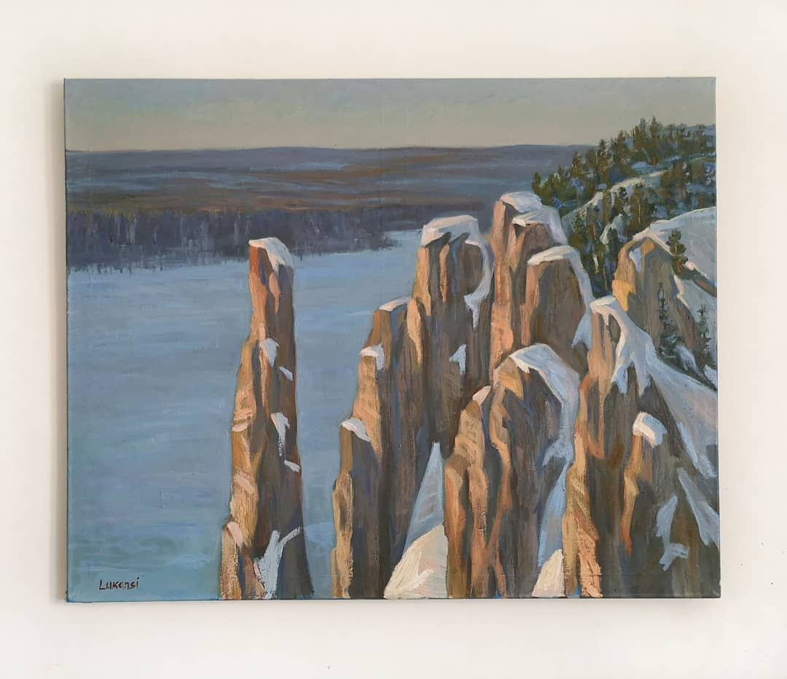
Semen Lukansi: Amga pillars, 2020 (oil on canvas)
Семен Луканси: Амгинские столбы, 2020
Semen Lukansi: Yakut craftswoman, 2023 (oil on canvas)
Семен Луканси: Якутская мастерица, 2023
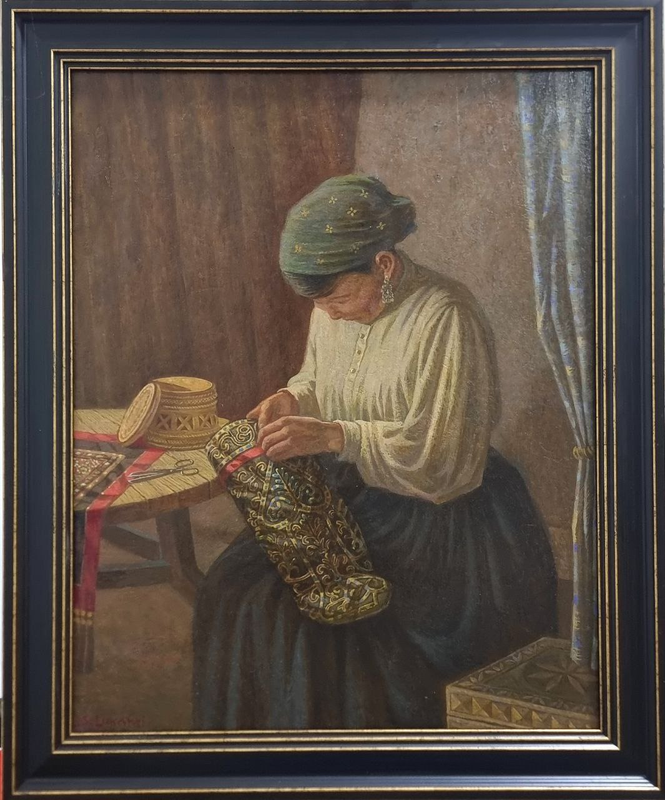
Semen Lukansi: Churapchinskoye resettlement, 20 (oil on canvas)
Семен Луканси: Чурапчинское переселение, 2023
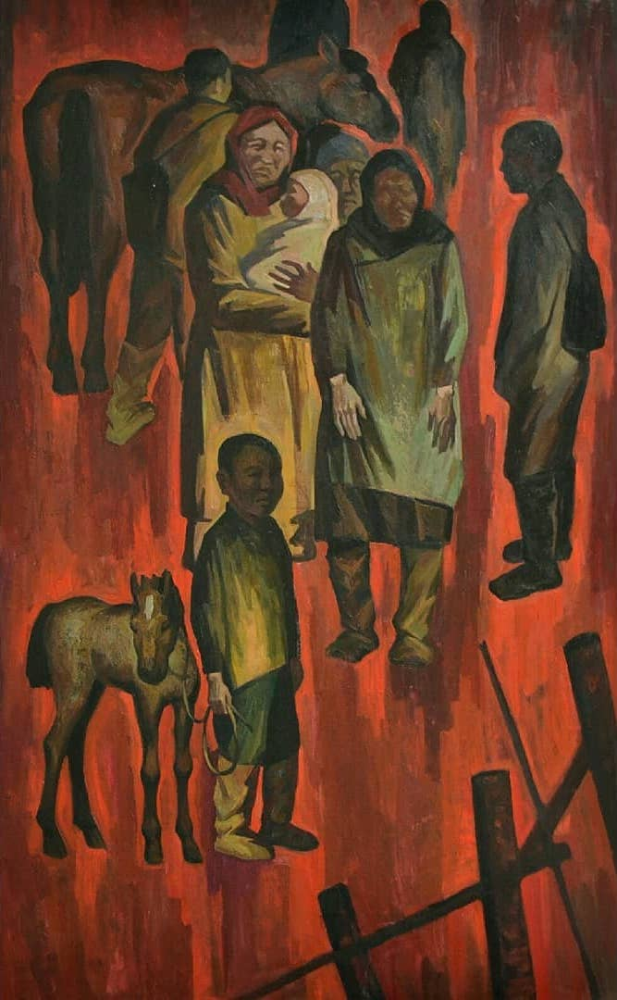
Semen Lukansi: Sardaana, 2022 (oil on canvas)
Семен Луканси: Сардаана, 2022 (oil on canvas)
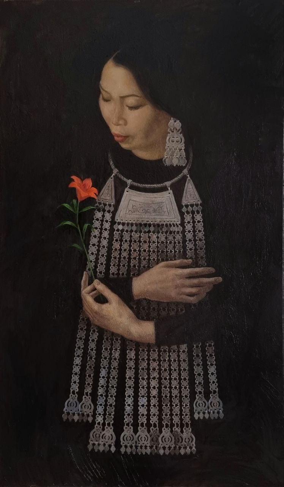
Semen Lukansi: Sardaana, 2022 (oil on canvas)
Семен Луканси: Сардаана, 2022 (oil on canvas)
Semen Lukansi: Sardaana, 2022 (oil on canvas)
Семен Луканси: Сардаана, 2022 (oil on canvas)
Semen Lukansi: Afternoon Dream", 2022 (oil on canvas)
Семен Луканси: Полуденный сон, 2022
Semen Lukansi: Algys, 2023 (oil on canvas)
Семен Луканси: Алгыс, 2023
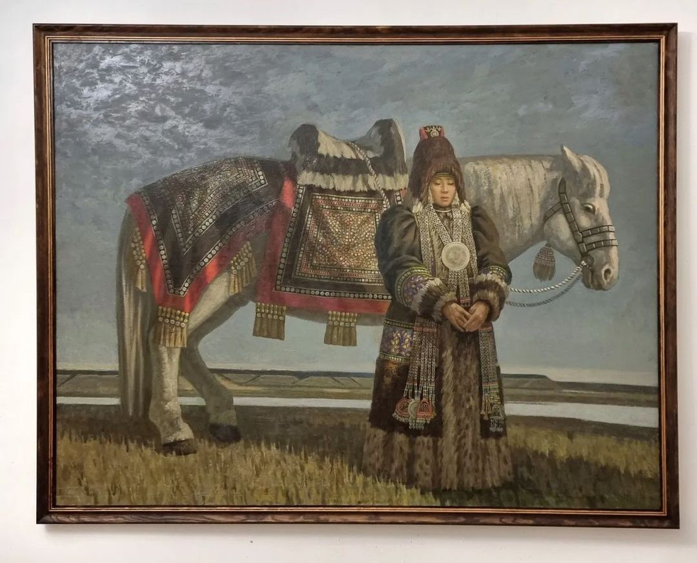
Semen Lukansi: On a new land", 2022 (oil on canvas)
Семен Луканси: On a new land", 2022 (oil on canvas)
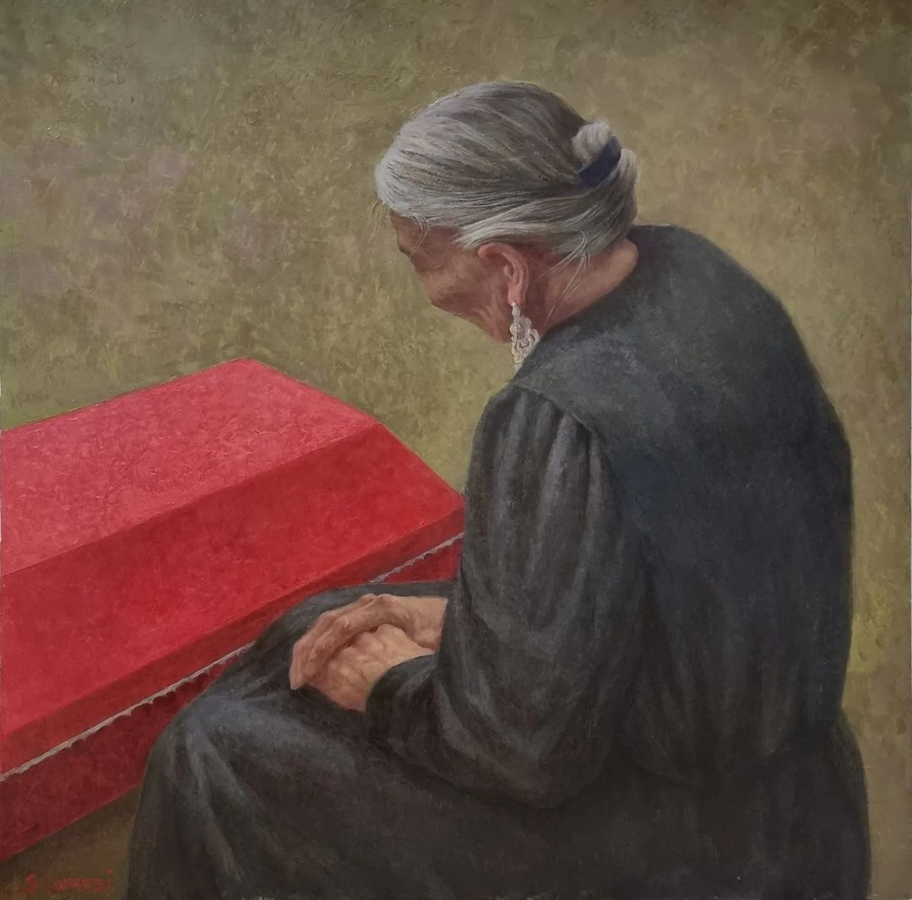
Semen Lukansi: Return, 2022 (oil on canvas)
Семен Луканси: Возвращение : Эргилли, 2022
Semen Lukansi: Return, 2022 (oil on canvas)
Семен Луканси: Возвращение : Эргилли, 2022
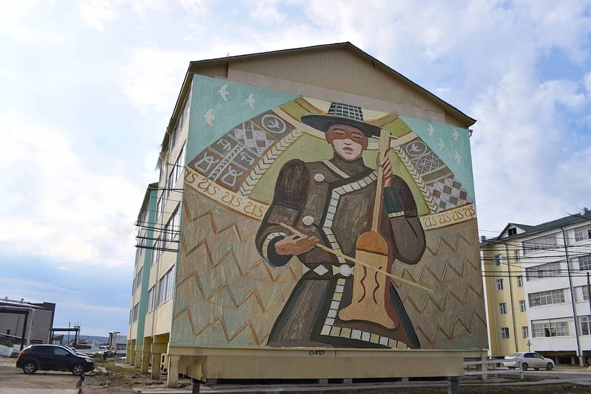
Semen Lukansi: Summer of Yakutia
Sketch for mural on the facades of residential buildings in the village Amga Семен Луканси: Эскиз проекта для Паблик -арт объектов- муралов «Лето Якутия» на фасадах жилых домов с
Sketch for mural on the facades of residential buildings in the village Amga Семен Луканси: Эскиз проекта для Паблик -арт объектов- муралов «Лето Якутия» на фасадах жилых домов с
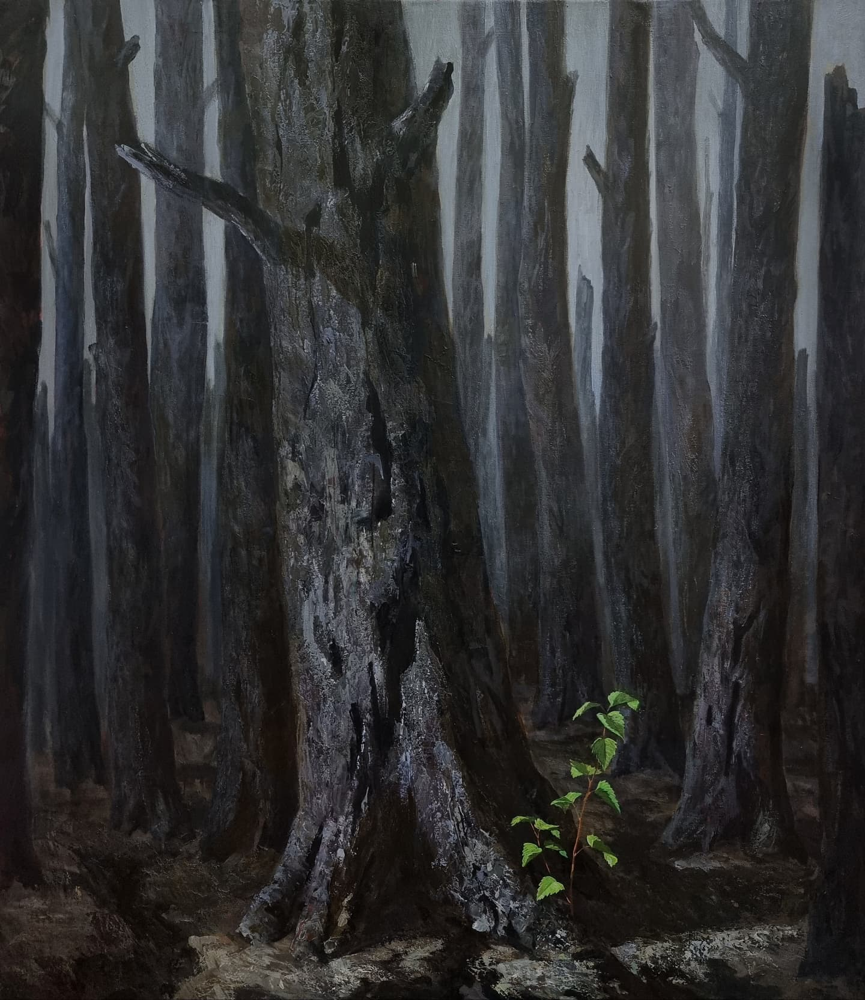
Semen Lukansi: Anthropocene, 2021 (oil on canvas)
Семен Луканси: Антропоцен, 2021
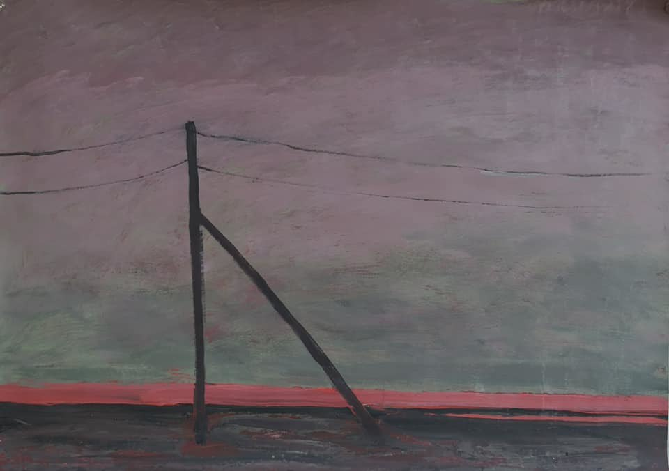
Semen Lukansi: Grandma Buluu, 2018 (series of paintings)
dedicated to the pollution of the Vilyuy River in western Yakutia Семен Луканси: Buluu Ebe, 2018 (series of paintings)
dedicated to the pollution of the Vilyuy River in western Yakutia
dedicated to the pollution of the Vilyuy River in western Yakutia Семен Луканси: Buluu Ebe, 2018 (series of paintings)
dedicated to the pollution of the Vilyuy River in western Yakutia
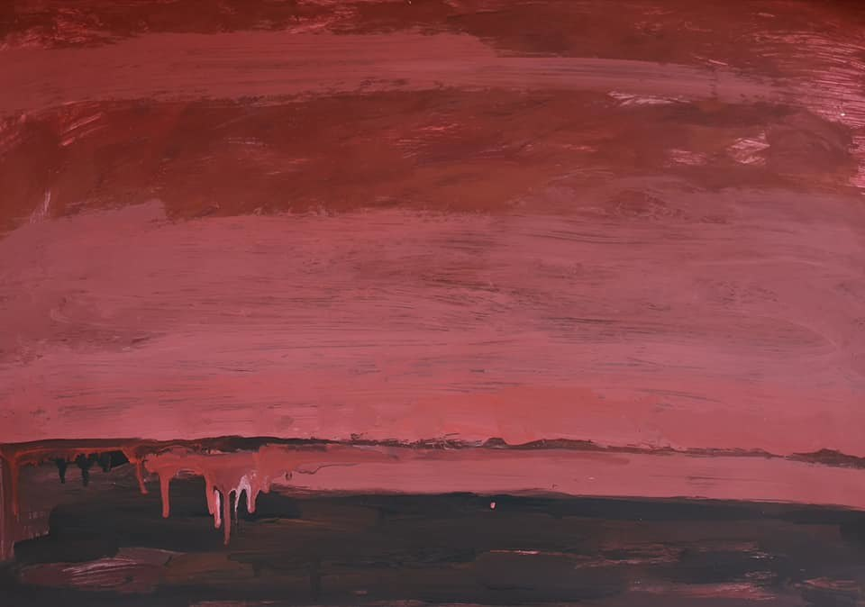
Semen Lukansi: Grandma Buluu, 2018 (series of paintings)
dedicated to the pollution of the Vilyuy River in western Yakutia Семен Луканси: Buluu Ebe, 2018 (series of paintings)
dedicated to the pollution of the Vilyuy River in western Yakutia
dedicated to the pollution of the Vilyuy River in western Yakutia Семен Луканси: Buluu Ebe, 2018 (series of paintings)
dedicated to the pollution of the Vilyuy River in western Yakutia
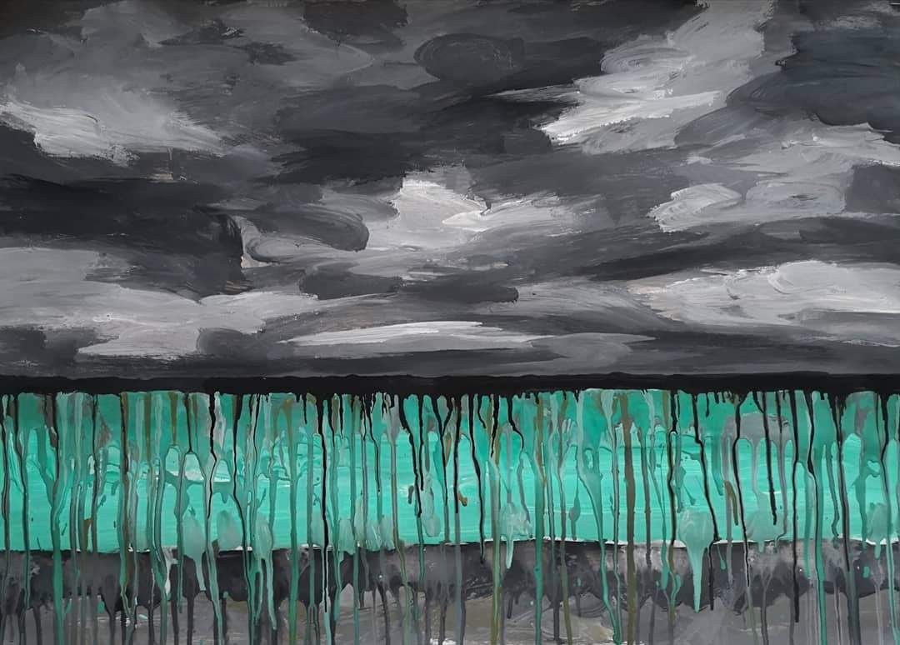
Semen Lukansi: Grandma Buluu, 2018 (series of paintings)
dedicated to the pollution of the Vilyuy River in western Yakutia Семен Луканси: Buluu Ebe, 2018 (series of paintings)
dedicated to the pollution of the Vilyuy River in western Yakutia
dedicated to the pollution of the Vilyuy River in western Yakutia Семен Луканси: Buluu Ebe, 2018 (series of paintings)
dedicated to the pollution of the Vilyuy River in western Yakutia
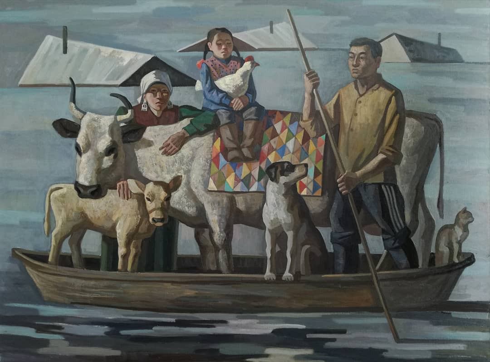
Семен Луканси: Бедствие, 2018
"Последний месяц с большой болью и сопереживанием наблюдаю как люди теряют свои дома, скот и хозяйства в Якутии. Пусть никогда больше не повториться такое страшное наводнение. Пострадавшим семьям Силы, чтобы все это пережить и восстановить!" - Семен Луканси Semen Lukansi: Disaster, 2018 (oil on canvas)
"For the past month, I have been watching with great pain and compassion as people in Yakutia lose their homes, livestock, and livelihoods. May such a terrible flood never happen again. Strength to the affected families to endure and recover from all this!" - Semen Lukansi
"Последний месяц с большой болью и сопереживанием наблюдаю как люди теряют свои дома, скот и хозяйства в Якутии. Пусть никогда больше не повториться такое страшное наводнение. Пострадавшим семьям Силы, чтобы все это пережить и восстановить!" - Семен Луканси Semen Lukansi: Disaster, 2018 (oil on canvas)
"For the past month, I have been watching with great pain and compassion as people in Yakutia lose their homes, livestock, and livelihoods. May such a terrible flood never happen again. Strength to the affected families to endure and recover from all this!" - Semen Lukansi